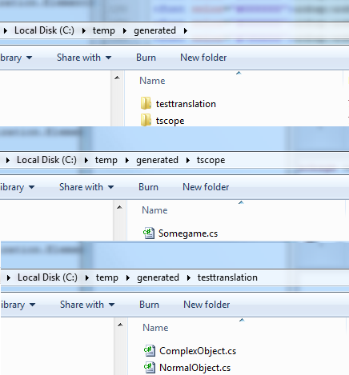

Introduction
This tutorial shows one how to create C Sharp Dot NET code from generated from S.IM.PL annotated classes. We assume that you have been through the java tutorial already.
Setting Up Environments
Two environments are required to generate C# code from Java. We will start by setting up our Java environment, where we generate C# classes, then we will de/serialize C# classes.
Java Environment in Eclipse
Use an SVN client like subclipse to checkout the following project over our svn. Use the user anonymous and the password anonymous.
C# Environment in Visual Studio
You can either use the VisualStudio plug-in we use called AnkhSVN to checkout these projects directly or use TortoiseSVN and import the projects by hand.
This contains the projects: ecologylanFundamental.NET, ecologylanFundamentalTestCases, and ecologylabXML.NETTesterApp.
Now that we have our environments set up, let's use our Java environment to create C# files!
From Java to C Sharp
Here we have two S.IM.PL annotated classes in Java that we want translated into C#.
//NormalObject.java
package testtranslation;
import ecologylab.serialization.ElementState;
public class NormalObject extends ElementState
{
@simpl_scalar String part1;
@simpl_scalar String part2;
public NormalObject()
{
}
}
|
//ComplexObject.java
package testtranslation;
import ecologylab.serialization.ElementState;
public class ComplexObject extends ElementState
{
@simpl_scalar int anInt;
@simpl_scalar float anFloat;
@simpl_scalar String anString;
@simpl_composite NormalObject otherThing;
public ComplexObject()
{
}
}
|
To translate this code we have created a small program that has simplTranslators as a dependency. This is very similar to the way the translator works in other languages as well. We use a TranslationScope, a collection of annotated classes as input and the C# translator creates two folders: ts, and package-name-of-your-generate-code-program. ts contains the translation scope of all of your classes and the other folder contains the new .cs files that are your de/serializable classes.
Translator Program Example
//TestCSharp.java
package testtranslation;
import java.io.File;
import java.io.IOException;
import ecologylab.serialization.SIMPLTranslationException;
import ecologylab.serialization.TranslationScope;
import ecologylab.translators.net.DotNetTranslationException;
import ecologylab.translators.net.DotNetTranslator;
public class TestCSharp
{
public static void main(String args[])
{
TranslationScope ts = new TranslationScope();
ts = TranslationScope.get("somegame",ComplexObject.class,NormalObject.class);
DotNetTranslator c = new DotNetTranslator();
try
{
c.translateToCSharp(new File("C:/temp/generated"),ts);
}
catch (IOException e)
{
e.printStackTrace();
}
catch (SIMPLTranslationException e)
{
e.printStackTrace();
}
catch (DotNetTranslationException e)
{
e.printStackTrace();
}
}
}
|
Running the above program produces your C# files.

Generated Code
Now that we have our C# files generated, we can go back to our VisualStudio environment and copy the folders into a new project that we have created. I created a project called TestCSharpCode, but the name isn't very important. Create a project, then import the project exologylabFundamental.NET. Make the project you created depenent on it by right clicking on your project, selecting "add refference", and then finding ecologylabFundamental.NET under the projects tab. Once you have done this, copy the two folders generated from Java (testtranslation,tscope) into your project.
With the exception of the constructor, all of the following is generated C# code.
// NormalObject.cs
// s.im.pl serialization
using System;
using System.Collections.Generic;
using ecologylab.attributes;
using ecologylab.serialization;
namespace testtranslation
{
public class NormalObject : ElementState
{
[simpl_scalar]
private String part1;
[simpl_scalar]
private String part2;
public NormalObject()
{ }
public NormalObject(String part1, String part2)
{
this.part1 = part1;
this.part2 = part2;
}
public String Part1
{
get{return part1;}
set{part1 = value;}
}
public String Part2
{
get{return part2;}
set{part2 = value;}
}
}
}
|
// ComplexObject.cs
// s.im.pl serialization
using System;
using System.Collections.Generic;
using ecologylab.attributes;
using ecologylab.serialization;
namespace testtranslation
{
public class ComplexObject : ElementState
{
private Int32 anInt;
[simpl_scalar]
private Single anFloat;
[simpl_scalar]
private String anString;
[simpl_composite]
private NormalObject otherThing;
public ComplexObject()
{ }
public ComplexObject(int anInt, float anFloat, String anString, NormalObject otherThing)
{
this.anInt = anInt;
this.anFloat = anFloat;
this.anString = anString;
this.otherThing = otherThing;
}
public Int32 AnInt
{
get{return anInt;}
set{anInt = value;}
}
public Single AnFloat
{
get{return anFloat;}
set{anFloat = value;}
}
public String AnString
{
get{return anString;}
set{anString = value;}
}
public NormalObject OtherThing
{
get{return otherThing;}
set{otherThing = value;}
}
}
}
|
///Somegame.cs
using System;
using System.Collections.Generic;
using ecologylab.attributes;
using testtranslation;
using ecologylab.serialization;
namespace ecologylab.serialization
{
public class Somegame
{
public Somegame()
{ }
public static TranslationScope Get()
{
return TranslationScope.Get("somegame",
typeof(ComplexObject),
typeof(NormalObject));
}
}
}
|
De/Serializing
We use the code above to de/serialize code. Just make sure that your project depends on ecologyLabFundamental.NET, and use the functions in ElementState, which is a super class of the generated classes that you made. instanceOfSomeObject.serializeToJSON() and instanceOfSomeObject.serializeToXML() serialize instantiated classes, returning a string. The following code serializes, then deserializes an instance of an object.
using System;
using System.Collections.Generic;
using System.Linq;
using System.Text;
using testtranslation;
using ecologylab.serialization;
namespace TestTranslation
{
class MainTester
{
public static void Main()
{
//instantiate
ComplexObject co = new ComplexObject(2, (float)2.3, "Wheeeeee");
//serialize
StringBuilder sb = new StringBuilder();
co.serializeToJSON(sb, null);
string s = sb.ToString();
Console.WriteLine("Serialization:");
Console.WriteLine(s);
//deserialization
ComplexObject p = (ComplexObject)Somegame.Get().deserializeString(s, null, Format.JSON);
Console.ReadLine();
}
}
}
|
The serialized strings produced by this code can also be used to be translated to other programming languages that use S.IM.PL.